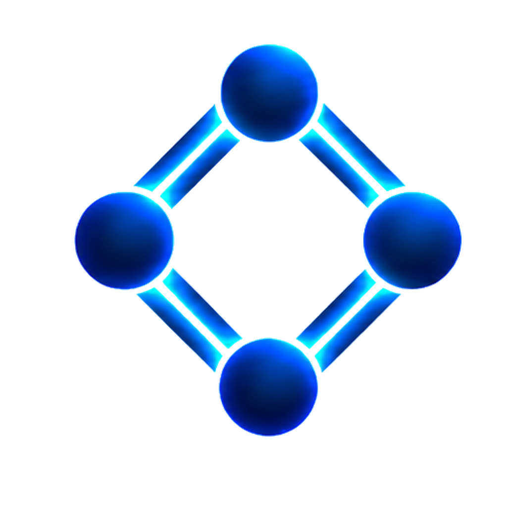

📄
Arrastra aquí un documento o
PDF, Word (.docx), Excel (.xlsx) o imagen (JPG, PNG, TIFF)
Los escaneados e imágenes se leen con OCR en este mismo equipo.
…

ARAEMKA RedactIntroduce la contraseña de acceso.
Contraseña incorrecta.
Arrastra aquí un documento o
PDF, Word (.docx), Excel (.xlsx) o imagen (JPG, PNG, TIFF)
Los escaneados e imágenes se leen con OCR en este mismo equipo.
…